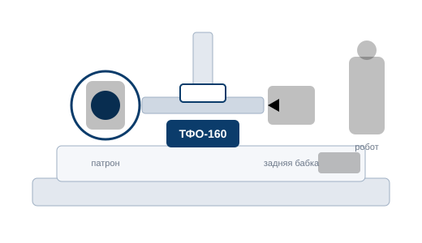

Профессиональные ЧПУ
Fanuc · Siemens · GSK · Mazak · Okuma · Haas. Блок киоск или импульсные драйверы.
370 000 ₽
Перейти

Универсальная четвёртая токарно-фрезерная ось. Подойдёт к любому станку.
Цена зависит от сценария подключения: ЧПУ начального уровня — 340 000 ₽, профессиональные стойки и ручные станки — 370 000 ₽.
| Тип | Универсальная четвёртая токарно-фрезерная ось |
|---|---|
| Диаметр обработки | уточняется |
| Расстояние между центрами | уточняется |
| Точность позиционирования | уточняется |
| Привод | уточняется |
| Интерфейсы подключения | StepDir, ModBus, реле, импульсные драйверы ЧПУ |
| Совместимость со станками | Любые токарные и фрезерные станки |
| Габариты / масса | уточняется |
Значения «уточняется» будут заменены на реальные данные по паспорту изделия.
«Ставили на 16К30 с Fanuc — шестерни режем без замечаний, подключение через киоск заняло пару дней.»
Андрей, инженер-технолог
«На самодельном станке с LinuxCNC ось встала по StepDir за вечер. Резьба и деления — как по маслу.»
Сергей, частый мастер
«Взяли на ручной 6Р82 вместо делительной головки. Ждём моторы, чтобы перейти к автоциклам.»
ИП Кузнецов
Отзывы — плейсхолдеры до сбора реальных отзывов клиентов.